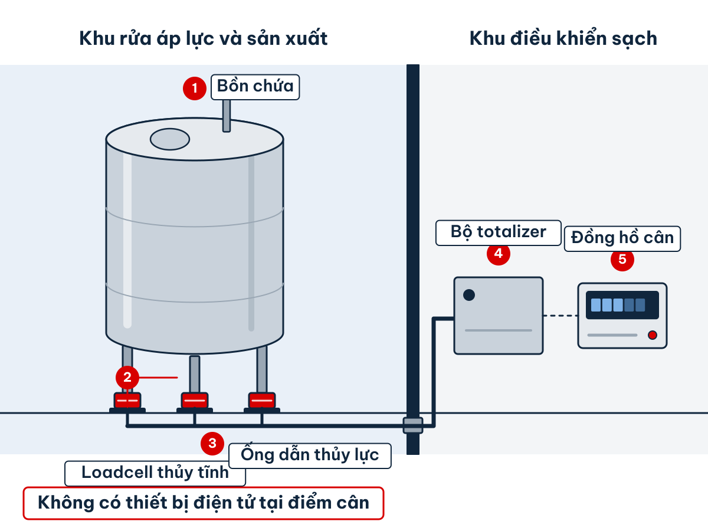
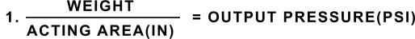
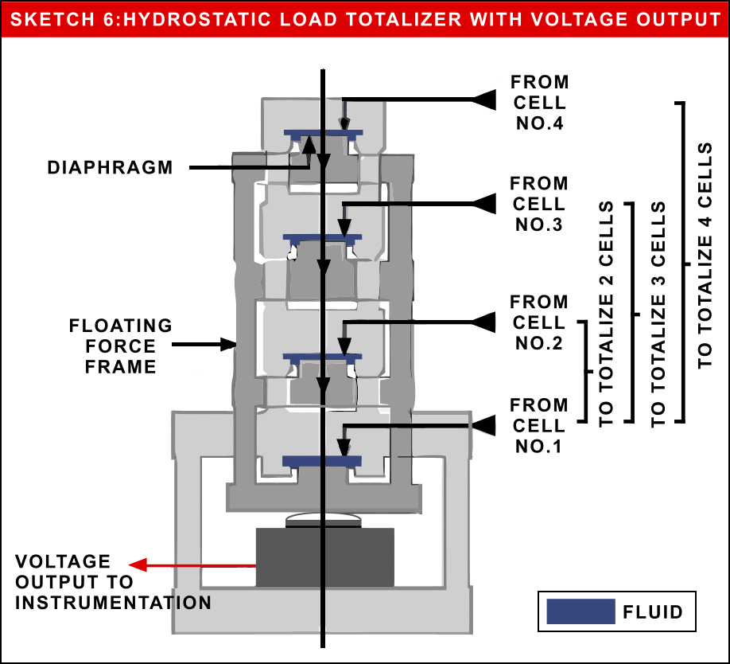
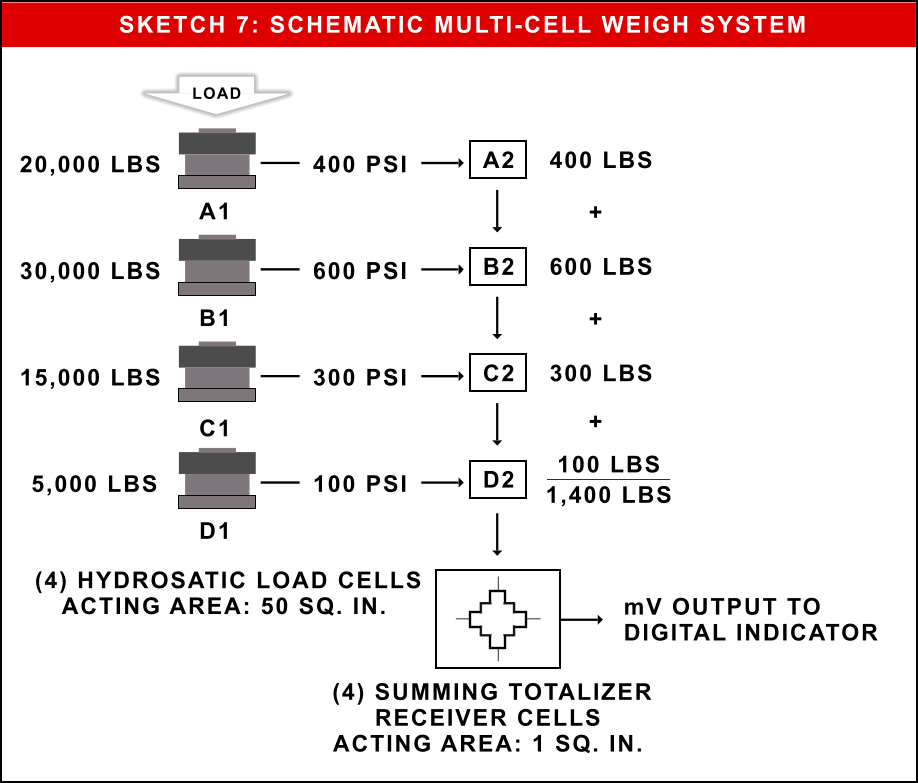
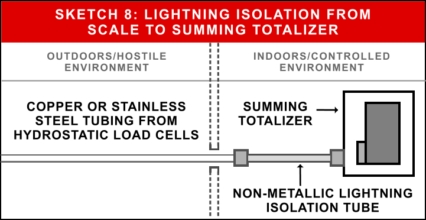

Emery Winslow Scale
Emery Winslow – Hydrostatic™ Technology
Bài chuyên sâu kỹ thuật về công nghệ cân thủy tĩnh độc quyền của Emery Winslow Scale Company: nguyên lý loadcell, công thức áp suất PSI, Summing Totalizer, khả năng chống nước, sét và nhiễu RFI/EMI, tuổi thọ, bảo hành — và những giới hạn mà chính nhà sản xuất thừa nhận. Nội dung được biên soạn và dịch thuật từ tài liệu chính thức của nhà sản xuất.

- Bảo hành trọn đời — hư hỏng do nước và điện
- Bảo hành 10 năm — vật liệu và tay nghề
- Sản xuất tại Hoa Kỳ
Ba cam kết trên là nội dung banner công nghệ Hydrostatic™ trên trang chính thức của Emery Winslow Scale Company. Bài viết dưới đây trình bày lại trang công nghệ của nhà sản xuất theo đúng cấu trúc và nội dung của hãng.
Một công nghệ hiệu quả khác thường cho những ứng dụng cân khó
Công nghệ Hydrostatic™, độc quyền của Emery Winslow, kết hợp thiết bị điện tử hiện đại với khả năng cảm biến trọng lượng bằng loadcell Hydrostatic™ gần như không thể phá hủy, tạo thành một hệ thống không có điện tử tại khu vực dễ bị tác động nhất — bàn cân. Thiết kế Hydrostatic™ cho phép các tín hiệu trọng lượng thủy tĩnh đã được bịt kín được truyền tới một khu vực sạch, được kiểm soát, tại đó chúng được cộng tổng và chuyển đổi thành một tín hiệu điện tử duy nhất, và tín hiệu này cấp cho đầu cân hiển thị số của hệ thống.
Sơ đồ số 1 và số 2 của hệ thống cân Hydrostatic™ là sơ đồ rút gọn của một hệ cân nhiều loadcell điển hình. Sơ đồ 1 là sơ đồ loadcell điện tử, Sơ đồ 2 là sơ đồ loadcell Hydrostatic™.
“Nếu hoạt động của Quý khách phụ thuộc vào loadcell, hãy chọn hệ thống cân duy nhất cam kết rằng chúng không bao giờ cần phải thay thế.” — Emery Winslow Scale Company


Như Quý khách có thể thấy, hai sơ đồ hệ thống trông khá giống nhau. Khác biệt đáng kể nằm ở vị trí đặt mạng cộng tín hiệu. Trong một hệ cân Hydrostatic™ điển hình, mạng cộng tín hiệu (Summing Totalizer) được đặt trong một môi trường được bảo vệ, chẳng hạn phòng điều khiển hoặc nhà cân. Còn mạng cộng tín hiệu của loadcell điện tử (được gọi là bo cộng tín hiệu — summing board) lại nằm cùng với các loadcell điện tử, trong chính môi trường mà bộ phận tiếp nhận tải phải chịu đựng.
Trong một hệ cân điện tử, loadcell điện tử, cáp và bo cộng tín hiệu rất nhạy cảm với môi trường. Trong một hệ cân Hydrostatic™, loadcell và ống dẫn không nhạy cảm với môi trường.
Bộ phận nhạy cảm với môi trường đầu tiên trong hệ cân Hydrostatic™ là đầu dò điện tử (transducer), một bộ phận của Summing Totalizer. Nhờ đặt Summing Totalizer cách xa bộ phận tiếp nhận tải của cân và cách xa môi trường khắc nghiệt, nó được bảo vệ khỏi hư hỏng và sai lệch hoạt động.
Tiền đề cơ bản của hệ cân Hydrostatic™ là: các hệ thống loadcell Hydrostatic™ cách ly mọi bộ phận nhạy cảm với môi trường tại một vị trí an toàn và thân thiện.
Khả năng vô hiệu hóa tác động của môi trường lên các bộ phận nhạy cảm với môi trường của hệ cân là một lợi thế lớn của công nghệ Hydrostatic™.
Các thành phần của hệ thống Hydrostatic™
Trong một ứng dụng cân xe tải, thường có từ bốn (4) đến mười (10) loadcell Hydrostatic™ đặt dưới bộ phận tiếp nhận tải (cầu cân), tùy theo chiều dài và tải trọng của cầu cân. Mỗi loadcell Hydrostatic™ được nối với Summing Totalizer bằng ống đồng hoặc ống inox áp lực cao. Đầu ra của loadcell Hydrostatic™, đo bằng pound trên inch vuông (PSI), được truyền tới Summing Totalizer. Chức năng của Summing Totalizer là cộng các đầu vào áp suất từ từng loadcell và chuyển đổi tổng đó thành một tín hiệu Millivolt (mV), tỉ lệ thuận trực tiếp với tổng đầu ra của các loadcell Hydrostatic™. Đầu ra mV được thu nhận, số hóa và hiển thị trên đầu cân hiển thị số. Sơ đồ 3 minh họa một hệ thống cân Hydrostatic™ nhiều loadcell điển hình.

Loadcell Hydrostatic™
Loadcell Hydrostatic™ về cơ bản là một cơ cấu cơ khí đơn giản, hoạt động theo các định luật vật lý đã biết. Nó gồm một piston, một đế (base), một xi lanh (cylinder) và một màng (diaphragm). Một lớp màng chất lỏng mỏng được kẹp giữa đế và màng. Piston ép lên màng. Kết quả là chỉ cần một lượng chất lỏng rất nhỏ (chưa tới một (1) pint chất lỏng cho một cân xe tải 70 foot).
Mỗi loại loadcell Hydrostatic™ được thiết kế với một “diện tích tác dụng” (acting area) chính xác — một giá trị đã biết theo đơn vị inch vuông. Ví dụ, khi một trọng lượng đã biết được đặt lên một loadcell Hydrostatic™ có “diện tích tác dụng” đã biết, đầu ra theo PSI có thể dự đoán được. Một trọng lượng 50.000 lb đặt lên “diện tích tác dụng” 50 inch vuông sẽ cho đầu ra 1.000 PSI.
Công thức là:

Bí quyết, dĩ nhiên, là thiết kế loadcell Hydrostatic™ với quan hệ tuyến tính giữa trọng lượng đặt vào và áp suất đầu ra. Ví dụ, nếu 50.000 lb cho ra 1.000 PSI, thì 25.000 lb phải cho ra 500 PSI và 100.000 lb phải cho ra 2.000 PSI.
Sơ đồ 4 minh họa các bộ phận chính trong một loadcell Hydrostatic™:

Sơ đồ 5 minh họa loadcell Emery Winslow Model 136 – 75.000 lb dùng trong các ứng dụng cân xe tải. Loại loadcell Hydrostatic™ này cũng được dùng trong cân bồn tải trọng lớn, cân sàn và các ứng dụng theo yêu cầu riêng:

Piston của loadcell chỉ chuyển động theo phương thẳng đứng. Điều này đạt được nhờ một tấm giữ (stayplate) ở đỉnh piston và một vòng cầu (bridge ring) ở đáy piston. Vị trí thẳng đứng của piston so với tấm đế được đo qua các lỗ đo (gauging holes) thể hiện trên Sơ đồ 5. Có ba (3) lỗ đo đặt cách nhau 120 độ. Một thước lá (feeler gauge) đơn giản được dùng để đo chuyển động đúng của piston. Khe hở trong loadcell cân xe tải Model 136 đo được từ 0,027” đến 0,033” trong vận hành bình thường.
Loadcell Hydrostatic™ miễn nhiễm hoàn toàn với nước, sét, động vật gặm nhấm, thay đổi áp suất khí quyển và nhiễu RFI/EMI. Đồng thời, vì loadcell Hydrostatic™ không dùng điện, Emery Winslow cho biết nó có thể được sử dụng với độ an toàn 100% trong các môi trường dễ nổ. Hơn nữa, loadcell Hydrostatic™ có thể được chế tạo từ thép thường hoặc các kim loại đặc biệt như titan, và do đó được sử dụng trong những môi trường ăn mòn khắc nghiệt nhất.
Vì loadcell Hydrostatic™ hầu như không có bộ phận chuyển động, tuổi thọ kỳ vọng rất dài — bền bỉ 30, 40 năm và hơn nữa.
Trong vận hành bình thường của loadcell Hydrostatic™, chất lỏng thủy tĩnh giữ trạng thái tĩnh trong giới hạn nén đã định trước của chất lỏng. Bản chất của hoạt động này là lọc bỏ rung động và tải va đập, nhờ đó loadcell Hydrostatic™ phù hợp với các ứng dụng tải va đập nặng và khắc nghiệt.
Cuối cùng, một hệ cân tải Hydrostatic™ có thể được định cỡ để đáp ứng đúng yêu cầu của ứng dụng. Summing Totalizer độc đáo có khả năng tối đa hóa cường độ tín hiệu millivolt dựa trên tổng tải của hệ thống, chứ không dựa trên tải trọng của từng loadcell riêng lẻ.
Đường truyền tín hiệu của loadcell
Như đã giải thích và minh họa trong các Sơ đồ 1, 2 và 3, mỗi loadcell Hydrostatic™ được nối tới một Summing Totalizer bằng ống đồng hoặc ống inox áp lực cao. Các điểm nối là đầu nối áp lực chất lượng rất cao, có khả năng chịu tới 15.000 PSI — hệ số an toàn xấp xỉ 10. Các đầu nối này bằng đồng thau hoặc inox grade 316. Chính các đầu nối chất lượng này được sử dụng thường xuyên trên các hệ thống Hydrostatic™ áp lực cao trong khắp các ngành công nghiệp quy trình.
Summing Totalizer
Summing Totalizer là một thành phần chủ chốt trong một hệ cân Hydrostatic™ nhiều loadcell. Loadcell Hydrostatic™ đã được dùng trong công nghiệp nhiều thập kỷ, nhưng cho tới khi Summing Totalizer ra đời, các hệ cân Hydrostatic™ nhiều loadcell vẫn chưa đáp ứng được các yêu cầu độ chính xác khắt khe của NTEP và Viện Tiêu chuẩn và Công nghệ Quốc gia (NIST).
Ở dạng đơn giản nhất, Summing Totalizer chuyển đổi áp suất đầu ra của từng loadcell Hydrostatic™ thành một lực, cộng các lực lại và chuyển đổi tổng lực thành một tín hiệu đầu ra millivolt. Summing Totalizer gồm một dãy các buồng nhận thủy tĩnh (receiver cells), mỗi buồng nhận PSI từ loadcell Hydrostatic™ được gán cho nó. Đầu vào PSI được chuyển đổi thành một lực thẳng đứng đo bằng pound và được cộng tổng trong Summing Totalizer.
Sơ đồ 6 là sơ đồ nguyên lý của một Totalizer bốn (4) loadcell:

Khung lực (Force Frame) đặt tải lên một đầu dò biến dạng điện tử (strain gage transducer) độ chính xác cao duy nhất, tạo ra đầu ra millivolt tỉ lệ với tổng áp suất đầu ra của các loadcell Hydrostatic™.
Sơ đồ 7 minh họa bốn (4) đầu vào loadcell Hydrostatic™ tới một Summing Totalizer:

Giả sử một hệ cân 70.000 lb: mỗi buồng nhận trong Summing Totalizer tiếp nhận áp suất đầu ra từ loadcell Hydrostatic™ của nó; tổng của bốn (4) buồng tạo ra một lực dùng để tính giá trị trọng lượng trên bộ phận tiếp nhận (cầu cân hoặc bàn cân) của cân. Thiết kế của Summing Totalizer hướng mọi lực theo phương thẳng đứng, với tải ngang bằng không, nên không làm nhiễu độ chính xác của số đọc. Và cuối cùng, đầu dò điện tử được định cỡ để tối đa hóa điện áp đầu ra — cho cường độ tín hiệu tối đa phục vụ độ phân giải và độ nhạy cao.
Làm thế nào tải được phân bố giữa bốn (4) loadcell Hydrostatic™ không tạo ra khác biệt. Ví dụ, loadcell A1 có thể chịu 60.000 lb, B1 và C1 ở mức 3.000 lb và D1 ở mức 4.000 lb — hệ thống vẫn đọc 70.000 lb chính xác như phân bố trọng lượng trong Sơ đồ 7.
Cuối cùng, Summing Totalizer mang lại một lợi thế đáng kể so với hệ loadcell điện tử trong trường hợp một loadcell bị hư và cần thay thế. Trong trường hợp hiếm hoi một loadcell Hydrostatic™ bị hỏng, loadcell thay thế thường có thể được lắp vào mà không cần hiệu chuẩn lại. Sơ đồ 7 cho thấy đầu ra mV của Summing Totalizer không cảm nhận thấy thay đổi nào khi một loadcell được thay bằng một loadcell khác có cùng diện tích tác dụng. Điều này đặc biệt quan trọng trong các vận hành kiểm soát quy trình, nơi vật liệu đang “trên dòng” (on stream) có thể bị mất nếu một loadcell hỏng.
Môi trường ngoài trời
Sét, mưa, ngập lụt, tuyết, thay đổi áp suất khí quyển, nhiệt độ cực đoan, bão và lốc xoáy, tác động địa chấn và các nguyên nhân tự nhiên khác đều là những yếu tố ảnh hưởng tới các hệ cân ngoài trời. Khi các điều kiện này xuất hiện ở dạng nghiêm trọng, tác động lên các hệ cân không được bảo vệ có thể là thảm khốc.
Cách hiệu quả nhất để ngăn thảm họa giáng xuống một hệ cân ngoài trời là sử dụng các thiết bị cân có miễn nhiễm toàn diện với những sự kiện tự nhiên này. Hai lực tự nhiên gây hại nhất là sét và nước. Hai lực tự nhiên này là nguyên nhân phá hủy hàng chục nghìn loadcell điện tử mỗi năm. Trận lụt lớn trên sông Mississippi đầu những năm 1990 đã phá hủy hàng trăm cân xe tải và cân đường sắt dùng loadcell điện tử. Các cân xe tải và cân đường ray Hydrostatic™ không hề hấn gì. Khi nước rút, các cân hoạt động như thể chưa từng có nước. Tất cả những gì cần làm là rửa sạch bùn và phù sa, và các cân Hydrostatic™ trở lại hoạt động.
Các bồn/bể ngoài trời, cân xe tải và cân đường sắt thường là những đối tượng đầu tiên bị sét đánh. Ngoài việc làm hỏng loadcell điện tử, tác động của sét còn thường xuyên làm hỏng bo cộng tín hiệu và thiết bị đo qua cáp điện nối loadcell với phần còn lại của hệ thống.
Không như vậy trong các hệ Hydrostatic™. Sét đánh vào bồn chứa hoặc cầu cân sẽ không làm hỏng loadcell Hydrostatic™, Summing Totalizer hay các thiết bị đo. Sơ đồ 8 minh họa cách một Summing Totalizer được cách ly khỏi tác động phá hoại của một cú sét với chi phí thấp.

Ít gặp hơn, nhưng vẫn có thể xảy ra, là hư hỏng do sét đối với thiết bị cân qua đường nguồn điện. Dù hư hỏng không thể ngăn chặn 100%, điện trở chống sét vẫn được khuyến nghị sử dụng.
Các loại cân ngoài trời phổ biến nhất theo số lượng là: 1. Cân bồn và cân phễu; 2. Cân xe tải; 3. Cân đường sắt. Bất cứ khi nào một lắp đặt nằm ngoài trời, Hydrostatic™ rõ ràng là lựa chọn tốt hơn.
Môi trường trong nhà
Một số môi trường trong nhà lành tính và thân thiện với hệ cân. Tuy nhiên, có những môi trường trong nhà thù địch và không thân thiện với hệ cân, và chính các ứng dụng này gây hại lớn nhất cho cân.
Các điều kiện môi trường trong nhà đáng quan tâm là: nơi việc rửa bằng nước hoặc dung dịch khử trùng nhiệt độ cao là thường xuyên; nơi khí nguy hiểm hoặc bụi dễ nổ đặt ra nguy cơ cháy nổ; nơi điều kiện ăn mòn đòi hỏi các kim loại như inox grade 304 hoặc grade 316, titan, Monel, Hastelloy, nhôm hoặc thậm chí nhựa đặc biệt; nơi rung động và tải va đập là một phần của quy trình; nơi sét hoặc lạm dụng điện xảy ra, hoặc nơi xung điện từ hàn hồ quang là một khả năng; nơi nhiễu điện RFI/EMI ở mức cực đoan; nơi biến thiên nhiệt độ ở mức cực đoan.
Với các điều kiện trong nhà như vậy, Emery Winslow cho biết Hydrostatic™ là giải pháp tốt hơn và hiệu quả chi phí hơn vì những lý do sau:
- Mọi loadcell Hydrostatic™ đều miễn nhiễm 100% với nước. Mọi loadcell Hydrostatic™ của Emery Winslow đều có Bảo hành Trọn đời chống hỏng do nước.
- Mọi loadcell Hydrostatic™ đều miễn nhiễm 100% với khí và bụi dễ nổ.
- Mọi loadcell Hydrostatic™ đều có thể được chế tạo từ vật liệu tùy chọn để vượt qua ăn mòn nghiêm trọng.
- Các hệ cân Hydrostatic™ vốn hoạt động tốt trong các môi trường va đập và rung động.
- Mọi loadcell Hydrostatic™ đều được bảo hành chống hỏng do sét hoặc lạm dụng điện.
- Mọi loadcell Hydrostatic™ đều miễn nhiễm 100% với nhiễu RFI/EMI.
- Mọi loadcell Hydrostatic™ đều miễn nhiễm 100% với hư hỏng do động vật gặm nhấm.
- Một số loadcell Hydrostatic™ hoạt động trong dải nhiệt độ từ −50°F đến 450°F.
Các loại cân trong nhà có sẵn với công nghệ Hydrostatic™ là: cân bàn và cân sàn; cân bồn và cân phễu; hệ cân máy trộn/phối liệu; hệ cân đường ray đơn (monorail); cân cẩu; và hệ cân thiết kế theo yêu cầu.
Các ngành công nghiệp ứng dụng
Ngành thực phẩm và hóa chất là những người dùng phổ biến của hệ cân Hydrostatic™. Vận tải, nông nghiệp, phân bón, thép và kim loại, kiểm soát phương tiện trên đường cao tốc, ngành hàng không và nhiều ngành khác cũng sử dụng công nghệ Hydrostatic™. Các ngành này thường có những yếu tố môi trường “vắt kiệt” công nghệ loadcell điện tử, thường xuyên vượt quá giới hạn chịu đựng của chúng. Kết quả là phải thay thế hoặc cải tạo tốn kém.
Với công nghệ Hydrostatic™, những yếu tố môi trường khắc nghiệt nhất được vô hiệu hóa. Vì loadcell Hydrostatic™ đã gần như loại bỏ các điểm mài mòn, tuổi thọ kỳ vọng rất cao. Bảo hành mười (10) năm cho loadcell Hydrostatic™ cân xe tải của Emery Winslow, chống hỏng do khuyết tật vật liệu và tay nghề, nói lên độ tin cậy trong các lắp đặt có tần suất sử dụng cao.
Tổng kết: giới hạn và chi phí sở hữu
“Dù mong muốn Hydrostatic™ là giải pháp cho mọi vấn đề cân, chúng tôi hoàn toàn hiểu các giới hạn của nó. Có lẽ giới hạn nghiêm trọng nhất của nó là chi phí của Hydrostatic™ so với các hệ điện tử tương đương. Đây là một công nghệ đắt hơn và vì vậy không thể cạnh tranh hiệu quả trên cơ sở giá mua.” — Emery Winslow Scale Company
Tuy nhiên, vẫn theo nhà sản xuất, khi chi phí của một sản phẩm Hydrostatic™ được so sánh với một hệ điện tử tương đương trên cơ sở “chi phí sở hữu”, nó rõ ràng trở thành món mua tốt nhất.
Emery Winslow đã sản xuất nhiều nghìn hệ cân Hydrostatic™, sử dụng hàng chục nghìn loadcell Hydrostatic™, qua nhiều thập kỷ hoạt động. Emery Winslow không “hưởng lợi” từ một thị trường thay thế loadcell, trong khi thị trường thay thế loadcell điện tử vô cùng lớn và cực kỳ sinh lợi cho các nhà sản xuất cân loadcell điện tử; Emery Winslow bằng lòng với lợi nhuận từ các hệ cân Hydrostatic™ bán cho số lượng khách hàng mới ngày càng tăng.
HearS và công nghệ Emery Winslow tại Việt Nam
HearS giới thiệu, tư vấn và cung cấp các giải pháp cân công nghiệp ứng dụng công nghệ Emery Winslow tại Việt Nam — HearS không phải nhà sản xuất và không sở hữu công nghệ Hydrostatic™. Với các hiện trường khắc nghiệt tại nhà máy thép, luyện kim, xi măng, hóa chất, cảng và logistics, đội ngũ HearS bám sát hiện trường để tư vấn cấu hình đúng theo tài liệu của nhà sản xuất, và xác nhận phạm vi, cấu hình cùng điều kiện áp dụng trong báo giá.
Nguồn tài liệu kỹ thuật: Emery Winslow Scale Company — Hydrostatic™ Technology — Website chính thức: https://www.emerywinslow.com/hydrostatic-technology/, truy cập 21/11/2026.
Nội dung bài viết được biên soạn và dịch thuật từ tài liệu kỹ thuật của nhà sản xuất. Bản quyền hình ảnh và nội dung thuộc Emery Winslow Scale Company. Hydrostatic™ là nhãn hiệu của Emery Winslow Scale Company.
Đọc tiếp
Cân thủy tĩnh và loadcell điện tử: hai hệ thống cân so sánh như thế nào
Hai bản vẽ Sketch 1 và Sketch 2 đặt cạnh nhau — đường tín hiệu, linh kiện nằm ngoài môi trường khắc nghiệt, và điểm hỏng.
Đọc bài viết: Cân thủy tĩnh và loadcell điện tử: hai hệ thống cân so sánh như thế nàoCông nghệ Hydrostatic™
Trang công nghệ của HearS: cách loadcell thủy tĩnh hoạt động, từ tải trọng đến số đọc, và những gì nhà sản xuất công bố.
Đọc bài viết: Công nghệ Hydrostatic™Cân thủy tĩnh hoạt động như thế nào
Giải thích đơn giản cách bồn trên loadcell thủy tĩnh chuyển khối lượng thành áp suất đưa tới bộ totalizer.
Đọc bài viết: Cân thủy tĩnh hoạt động như thế nào
Quý khách cần hỗ trợ về việc này?
Hãy cho chúng tôi biết ứng dụng của Quý khách, chúng tôi sẽ phản hồi qua email.